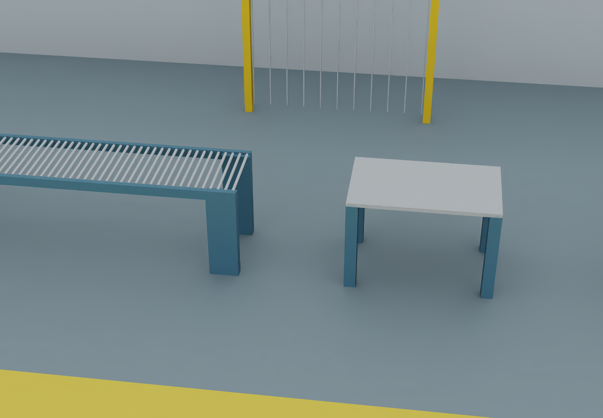

P006 · 트랙 B · 증거 기반 승격처음 검증된 10종 · GEOMETRY_VERIFIED
프로젝트 기준 설계 형상 검증입니다. 실측 장비 인증·동작·안전·REAL 검증과 다릅니다.
연결 666 / 724형상 10 / 666 · 1.50%외부 대기 58물리·기능·포트·READY·REAL 각각 0
26종 전수 판정
참조 오류 20: 배치/참조 문제 · 바닥 6: 설계 근거 부족(좌표 차이 관찰). 의도된 Variant/단위 오류로 확정된 항목 0.
시각 검수 · 기존 RTX 출력과 현재 USD 해시 일치
기존 렌더 재검수. 이번에 새 RTX 렌더를 실행한 것은 아닙니다.


다음 병목
나머지 656종은 자산 종류별 핵심 구성과 기준 설계의 대응 근거가 부족합니다. 연결 정상과 형상 적합을 분리하고 다음 공통 베이스의 근거부터 검증합니다.